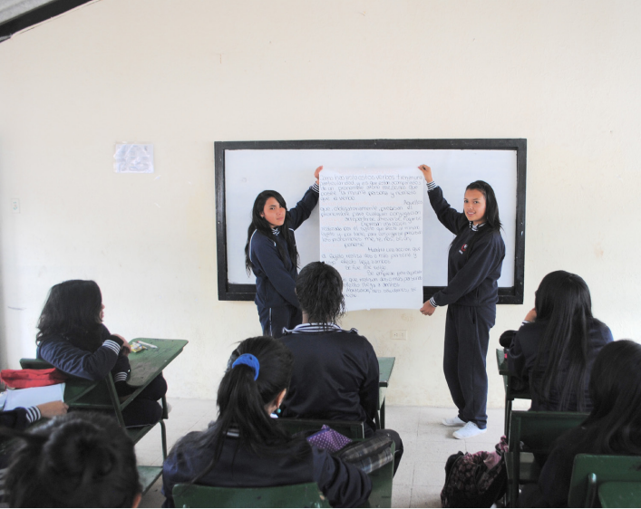

Comprendo para saber
Alumno:
Comprendo para saber
Alumno:
1. Contextualización
En función de la intencionalidad comunicativa que tengamos, y considerando el tipo de destinatarios del hecho comunicativo, podemos expresar en formato de texto la información que leemos en un gráfico estadístico estadística o en un organizador gráfico, como un mapa mental. Podemos usar la información para escribir textos periodísticos o académicos, según sea el caso.
2. Tipologías de texto que podemos escribir
Las principales tipologías que podemos escribir son las siguientes:
2.1. Texto expositivo
Expone en líneas generales la información que presenta el gráfico estadístico o el organizador gráfico. Se pueden mencionar en el caso de una tabla, la información que presentan los dos ejes. En el ejemplo del gráfico de la página anterior: se menciona a quiénes se aplicó la encuesta, la población total, el número de hombres y mujeres, cuáles fueron las alternativas, las más y menos usadas, etc.
En el caso de un organizador gráfico, como un mapa mental, se puede exponer en qué consiste el tema principal y las ideas o conceptos claves que lo complementan. Cada idea o concepto clave constituiría un párrafo distinto.

Ejemplo de texto desarrollado, a partir del gráfico estadístico de la página anterior.
Se aplicó una encuesta sobre el uso del tiempo libre a ciento dos estudiantes de Básica Superior: cuarenta y nueve mujeres y cincuenta y tres varones. Debían elegir la alternativa que mostraba a qué dedicaban la mayor cantidad de su tiempo libre. Las alterativas eran siete: jugar videojuegos, “chatear” con amigos, practicar deportes, leer sobre distintos temas, escuchar música, mirar videos, realizar actividades extracurriculares.
Las alternativas preferidas por los estudiantes son la realización de actividades extra curriculares y “chatear” con los amigos, cada alternativa es preferida por veintitrés estudiantes. La alternativa menos utilizada, cuatro estudiantes, es la de leer sobre distintos temas.
Ejemplo de texto desarrollado, a partir del mapa mental de la página 152.
Para lograr un aprendizaje exitoso se requieren cinco pasos: crear, descubrir, controlar, aprender y triunfar: ser creativo a la hora de tomar apuntes, resolver pruebas, elaborar fichas y realizar mapas mentales. Es posible descubrir nuevas formas de aprendizaje si se forma parte de grupos de estudio, se formulan comentarios, se examinan los posibles recursos, y se colabora con otros para realizar un aprendizaje social. Se recomienda controlar el proceso de aprendizaje, a través del análisis de las asignaturas, poniendo a prueba el conocimiento, monitoreando los conocimientos y gestionando el cumplimiento de tareas.
El aprendizaje se construye con la integración de conceptos, la revisión de apuntes, la evaluación del nivel de comprensión de los contenidos y la solución de problemas para memorizar a largo plazo. El aprendizaje exitoso permite el desarrollo personal, un crecimiento permanente, y el cumplimiento de los objetivos planteados, aspectos que son parte de procesos cíclicos.
2.2. Texto argumentativo
A partir de la información de un gráfico estadístico, puedes realizar inferencias y análisis que te permitirán encontrar argumentos, establecer conclusiones y formular recomendaciones. Para ello debes realizar cruces de la información de ambos ejes y compararlos; por ejemplo, obtener porcentajes sobre el total de la población, etcétera. Con la información que se dispone en un mapa mental no es posible encontrar elementos que permitan generar argumentos o conclusiones, es necesario ampliar la información.
Ejemplos
Al analizar las siete alternativas de uso de tiempo libre, puedes asegurar que solo 23 estudiantes de Básica Superior realizan actividades extracurriculares; esto representa el 22,55% de estudiantes. Este dato puede servir para que la institución educativa replantee el tipo de opciones que está ofreciendo en las actividades extracurriculares, o examinar los costos y horarios para motivar a la participación.
Según el gráfico, se puede concluir que la opción de lectura voluntaria es la menos usada por los estudiantes, pues apenas cuatro de ciento dos la utilizan, lo que significa aproximadamente el 4% de estudiantes. Si, por ejemplo, la institución educativa considera que el tema de la lectura es importante en la formación de sus estudiantes puede aquí encontrar un dato que le permita evidenciar la necesidad de realizar una campaña de animación a la lectura.
Si comparas cuántas alternativas de uso de tiempo libre implican el uso de dispositivos electrónicos encontrarás que son cuatro: jugar videojuegos, “chatear” con amigos, escuchar música y mirar videos. El total de estudiantes que emplean el uso de estas cuatro alternativas es de sesenta y cinco, lo que representa casi un 64% del total. Con este dato puedes recomendar que se haga una campaña para concienciar a los estudiantes sobre el uso de los dispositivos electrónicos y el tiempo que les dedican.
Podrías también recomendar, por ejemplo, que se haga un estudio sobre el rendimiento académico de los estudiantes que realizan actividades extracurriculares, frente a los que no lo hacen.